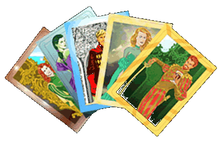

|

The Trumps
"The cards," I said, "the family Trumps. They
are more than a mere sentimental affectation.
They are a means of communication."
-Corwin to Dara, The Guns of Avalon.
The Trumps, which Corwin also sometimes refers to as the Tarots,
are essentially tarot decks whose Trumps possess unusual powers.
In both Amber and the Courts of Chaos, Trumps are usually done in
the form of an entire tarot deck, with the Greater Trumps representing
either the Royalty of Amber or the Lords of Chaos, while the lesser
Trumps are either entirely mundane or represent important nobles
or servants. Typically, the Greater Trumps are representative of
a family or other organization, and decks are executed upon commission.
However, it is not unusual for someone to execute a Trump of an
individual person, place, or even a thing.
The Trumps are tarot cards which have been created and enchanted
by a Trump Artist. True Trumps are created by one who possesses
either the power of Pattern or that of the Logrus. Others can create
Trumps but theses will be flawed and no where near as reliable as
true Trumps, using such Trumps may even prove fatal.
The Trumps are naturally cool to the touch, by concentrating on
the subject of a card this coolness will increase and soon a character
can create a link between himself and the subject. If the subject
of the card is a person or creature concentration on the card will
form a mental link between the subject and owner, at first this
link will be a pure mental link, the subject will feel a psychic
presence reaching out to him. At this point he may either accept
the call or attempt to block it. If accepted the caller may send
thoughts to the subject and the subject may do likewise. Within
a matter of moments the link between the subject and the caller
will become strong enough that both can clearly see the other, soon
after the link will be strong enough that the caller and subject
will seem to be standing right next to each other and can even physically
interact. Either the subject or the caller can at this point pull
the other through the link, bringing them to their current location.
If the subject attempts to block the call however, then the caller
will have to defeat the subject in a contest of wills before continuing.
Sometimes the subject is too taken by surprise however to even begin
blocking the call and the caller can establish a mental link before
the subject can resist.
Rank
System:
The following is a list of abilities commonly known of among Trump
Artists. Characters can attempt to learn some or all of these abilities,
depending on how many points they spend in Trump Artistry. There
are many other abilities as well, although abilities other then
those listed are almost unknown. Characters wanting to have abilities
above and beyond those listed here will need to have more then 40
points in Trump Artistry. The higher level abilities of Trump Artistry
vary from artist to artist. The exact abilities a character can
purchase will need to be worked out with the GM.
"They were almost lifelike in appearance, the Greater
Trumps ready to step right out through those glistening surfaces.
The cards seemed quite cold to the touch."
-Corwin, Nine Princes in Amber
Trump cards are an eternal link between image and reality. Trump
can be used for communication, across limitless Shadow, or for transportation,
for scrying, or fortune telling. The subject of a Trump may be a
person, place, creature, or thing.
Anyone familiar with them may use the Trumps with no problem, even
without knowing of Trump characters can eventually come across the
use of the Trumps by accident or trial and error.
"Get hold of mine, stare at it, concentrate on it, try
to keep all other thoughts out of your mind, pretend that it is
really me and begin talking to me then. You will find that it really
is, and that I am answering you."
-Corwin, The Guns of Avalon
Anyone can attempt to make use a Trump by simply staring at the
card long enough for contact to form. It takes anywhere from a few
seconds to a minuet to begin contact, and then an equal amount of
time for the contact to form to the point of physical transference.
Freebies:
The Following abilities can be used by anyone taught how to do
so, and cost nothing to learn:
Force Call:
"I could try a contest of wills through them? There was
that power present, and perhaps even others of which I knew nothing."
-Corwin, Nine Princes in Amber
Characters can attempt to force a Trump call by concentrating on
a card and trying to make contact as quickly as possible, with as
much force behind the attempt as they can summon. The idea is to start
contact so suddenly that the subject won't have any time to raise
a defense against the contact. This obviously works best if the subject
is distracted, and will almost always fail if there is great distance
between the subject and the character.
If surprise doesn't work then the attempt will soon become a contest
of both Psyche and Endurance. The character calling is at a disadvantage
however, since he must expend more energy to make contact then the
subject does to resist.
If successful he has contact and can then try to talk with the subject
or they will engage in psychic combat.
Full Trump Artists are almost impossible to surprise when forcing
calls because of their ability of Trump Sensitivity.
Block Call:
"I stiffened and resisted what was to come by blanking
my mind completely."
"I closed my eyes and rested my head in my hands, emptying
my mind and building a wall around the emptiness. No one home. Out
to lunch. No solicitors. This property is vacant. Do not disturb.
Trespassers will be prosecuted. Beware of dog. Falling rock. Slippery
when wet. To be razed for urban renewal . . ." "It eased,
then came on again, hard, and I blocked it again. There followed
a third wave. I stopped that one, too."
"Then it was gone."
-Corwin, The Guns of Avalon
It is possible to block a Trump Call, this requires total concentration
by the character. To block a call characters use both their Psyche
and Endurance to resist, forcing themselves to ignore the incoming
contact, hopefully longer then the caller can maintain his concentration
on the character.
Trump Casting:
"So I shuffled them and spread them all out before me
in the proper manner. Then I read them, and saw that bad things
were in store for the entire family?"
-Corwin, Nine Princes in Amber
This skill allows for a limited form of fortune telling by those
with a set of Trumps. The ways of casting the cards vary, and the
readings of the cards are by no means reliable, but many members of
both Amber and Chaos make use of the Trumps to gain hints and clues
about the future. There are really no rules for this ability, other
then the more skilled in the Trumps or Sorcery a character is, the
better he or she can read the omens of the Tarots.
Trump Scrying:
"The Trump for Amber indicated that a warm, dry autumn
prevailed there, and we were nearing the real Earth."
-Corwin, Nine Princes in Amber
"After several moments, the scene took on depth and color.
I sank into
the emerging textures, and everything advanced toward me, growing
larger,
crowding out my immediate surroundings. My gaze sought the wall
clock I
remembered; to the right of the bar...
9:48.
I couldn't have cut things much closer.
I could see the patrons now, hear the sounds of their voices. I
looked
for the best point of arrival. Actually, there was no one at the
right end
of the bar, near that clock. Okay...
I was there. "
-Merlin, Trumps of Doom
Using the Cards, characters can make light contact with a place and
view the area shown in the card. They can see anything they normally
would be able to see if they were actually standing in the scene of
the trump. This however is easily detected by anyone versed in the
Trumps or other powers.
Trump Portal:
"For that matter, one or more of my brothers had to be
down in the valley. A gateway for some of my troops could be set
up by means of the Trumps."
"While there are many things I want to discuss with you,"
I continued, "I want to take care of the enemy first. If you
will hold the contact, I will send you several hundred riflemen."
"He smiled."
-Corwin, The Guns of Avalon
Once a Trump contact is established a character can choose to strengthen
it to the point where anyone may step through from one side to the
other. This requires one person with the trump on one side of the
connection and the subject of the card on the other to both agree
to sustain the connection. In the case of a Trump of a place, only
the one with the card is needed. Maintaining a Trump Gate is slightly
tiring, and becomes much more tiring the farther through shadow the
Gate travels.
Trump Tricks:
These abilities must be paid for, but can be learned by anyone
with the proper instruction or enough dealing with the Trumps. There
are most likely more, but only these are common knowledge.
Caller ID:
"I had taught myself to deal them all out and touch all
of them lightly at the same time, waiting for a stirring."
-Caine, The Courts of Chaos
By flipping through their Trumps, a character can identify a caller
by taking out there cards and sensing the stirrings on their card
that is caused by them engaging in a Trump call. For this ability
to work the character must have a card for the person making the
call. To see if they can identify the caller the characters must
finger through his cards, touching each one lightly. If he searches
through too many cards he won't have enough time to identify the
caller before the connection is established. Obviously he must own
the callers card in order to ID him.
Trump Spying:
"I had learned to be completely passive about it. I had
taught myself to deal them all out and touch all of them lightly
at the same time, waiting for a stirring. When it came, I would
shift my attention to the speakers. Taking you one at a time, I
even found I could sometimes get into your minds when you were not
using the Trumps yourselves-if you were sufficiently distracted
and I allowed myself no reaction."
-Caine, The Courts of Chaos
Using this ability characters can attempt to listen in on Trump
calls, or even spy into the minds of those he has Trumps for. Characters
must be watching for a call to pick one up. If they are monitoring
the cards when another character that they have a card for begins
a contact they must clear their minds of all thoughts and reactions
to avoid detection.
To read the thoughts of the subject the character tells the GM how
long he will monitor the Trump. During that time if the person being
spied on becomes distracted or otherwise lets his guard down the
character spying will have gained a look into the thoughts of the
subject. The greater the Psyche advantage the more info gained.
Characters with a high enough Psyche may realize he is being spied
on or at least know that something is odd.
Trump Artist Abilities:
The following abilities are known only by Full Trump Artists
and require the Pattern or Logrus to be used correctly. Some ability
with Sorcery is also required in order to become a true Trump Artist,
and learn the abilities below.
Trump Sketch:
"So I seated myself beside a table and commenced the construction
of a Trump for the bar at the country club Bill had taken me to
the previous evening. I worked for perhaps twenty minutes before
I was satisfied."
-Merlin, Blood of Amber
The First step in making a Trump. Characters can make a Trump Sketch
in ten minuets to an hour, depending on their artistic ability,
and skill in Trump Artistry. Trump Sketches do not have as permanent
a connection to their subject as finished Trumps, major changes
in the subject will cause the sketch to lose it's connection to
the subject as will the simple passage of time. In general the less
the subject changes the longer the sketch will last. Trumps of places
usually last longer then people, sometime lasting years or decades,
while trumps of people usual lose their power within a week or two.
Create Trump:
"A minute or so later I had the card before me on a Bat
rock, and I was sketching my room back at the Arbor House, the forces
of the Logrus moving through my hands. I had to work deliberately,
getting the proper feeling of the place into the drawing. Finally,
when it was finished, I stood. It was right, it was ready. I opened
my mind and regarded my work until it became reality. Then I walked
forward into the room."
-Merlin, Blood of Amber
"I set up the piece of pasteboard, seated myself and closed
my eyes, summoning a mental image of Coral, preliminary to beginning
her sketch. Again, I half wondered whether the picture in my mind,
along with the appropriate magical endorsement, would be sufficient
for contact. But now was not the time to mess around being experimental.
I opened my eyes and began to draw. I used the techniques I'd learned
in the Courts, which are different yet similar to those employed
in Amber. I was qualified to execute them in either fashion, but
I'm faster with the style I learned first."
-Merlin, Sign of Chaos
A Full Trump differs from a sketch in that it is permanent and
more durable. (It isn't any tougher then the card it's painted on,
but it will never smudge or fade with age, where as a sketch will
fade as easily as the pencil they're drawn in.)
"Those sorcerers you spoke of - from the adjacent kingdoms
. . . Could any of them do up a set of Trumps?"
"Yes, but theirs would be less than perfect. It is my understanding
that you have to be an initiate of either the Pattern or the Logrus
to do them properly. Some of them could do a sort of half assed
set, though, one you'd be taking your chances on using-maybe winding
up dead or in some limbo, sometimes getting where you were headed."
-Merlin, Trumps of Doom
A True Trump requires either the Pattern of the Logrus for a power
source, They take a day or two to complete depending on artistic
ability and skill. Trumps based on other sources other then the
Pattern or Logrus are flawed and dangerous to use across Shadow,
and become more dangerous the farther they are used to cross Shadow.
Trump Sensitivity:
"We had hiked for over an hour when I had the premonitory
feeling that someone was picking up my Trump. I froze."
-Merlin, Trumps of Doom
Characters with this ability have become very sensitive to the
uses of Trump and Trump contacts. They can sense someone starting
a Trump contact before a connection is established by sensing
when someone is merely touching their Trump.
Trump Gate:
"It had employed a Trump Gate, which is not a thing one
does lightly-or at all, for that matter, if it can be avoided. It
is a flashy and spectacular thing to make Trump contact with some
distant place and then pour tons of power into the objectification
of such a gateway as a form possessed for a time of an independent
existence. It is exceedingly profligate of energy and effort-even
a hellrun is much easier-to create then one which will stand for
even fifteen minutes. It can drain most of your resources for a
long while. Yet this was what had occurred. The reason behind it
did not trouble me, as much as the fact that it had happened at
all. For the only people capable of the feat were genuine initiates
of the Trumps. It couldn't be done by someone who just happened
to come into possession of a card."
"Which narrowed the field considerably."
-Merlin, Blood of Amber
A Trump Gate as they are more commonly called, is an independent
doorway from one place to another. To create one a character pours
a great deal of energy into the Trump connection once they have
opened it. The connection will then remain open as a door sized
portal until the creator closes it, it is somehow disrupted, or
it runs out of energy. A Trump Portal will drain a completely drain
a character within minuets. Each minuet keeping a Gate open requires
as much energy as Hellriding for an hour.
Trump Memory:
"Can't bring you through", he said. "No Trumps,
and I am too weak."
-Brand, Sign of the Unicorn
"Reaching out through Shadow, I found myself another blade.
With its tip, I traced a rectangle in the air, a bright circle at
its center. I reached into it with my will and desire. After a moment,
I felt contact."
-Merlin, The Shroudling And The Guisel
While not a living Trump, characters with this ability have discovered
that the cards themselves are not required to employ their powers,
Only a focus for their mind. This could the jack of diamonds, a photograph,
or even a tracing in the air. To use this ability a character requires
something to represent the subject, or total concentration while he
pictures the subject in his mind. The Character then focuses on that
image and wills contact. This takes longer then normal contact and
requires more energy to maintain.
|